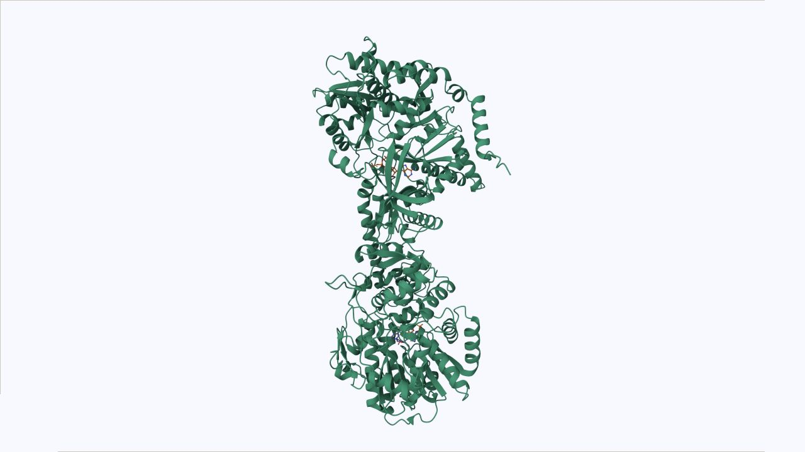
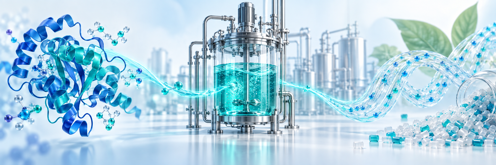
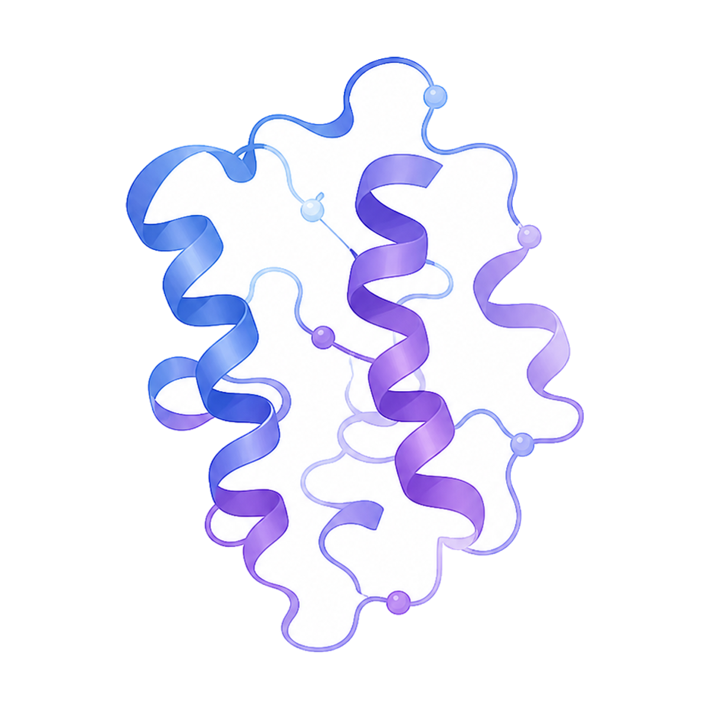
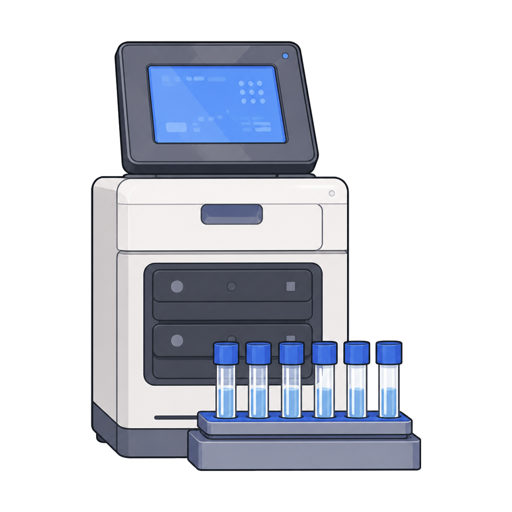

MEMBER 01郑天恩
NJTECH-SYNCAR · AI–SYNBIO CHALLENGE 2026
让羧酸还原酶，
让羧酸还原酶，
更好地处理 GABA。
我们正在探索一条从 L-谷氨酸到 1,4-丁二胺的绿色生物制造路线，并用实验数据与人工智能共同改造其中的关键酶 CAR。

起始原料L-谷氨酸
谷氨酸脱羧酶→中间产物GABA
CAR 及后续转化→目标产物1,4-丁二胺
WHY BIO MANUFACTURING用生物的方式，
用生物的方式，
制造有价值的分子。
从一种原料到另一种产品，化学转化是材料、医药与工业生产的共同基础。我们关注的是：这一步能否在更温和的条件下完成？
传统化工路线常常需要高温、高压或复杂催化体系。生物制造提供了另一种思路：利用微生物和酶完成反应，探索降低能耗与环境负担的可能性。
本项目选择的目标产物是 1,4-丁二胺。它是一种平台化合物，可以作为材料、医药和精细化工领域的原料。我们的目标，是为它探索一条从 L-谷氨酸出发的生物制造路线。
在这条路线中，谷氨酸脱羧酶首先将 L-谷氨酸转化为 γ-氨基丁酸，也就是 GABA。接下来，羧酸还原酶 CAR 参与关键转化，与后续反应共同通向目标产物。

研究切入点
让路线中的关键酶更适应目标底物，为后续生物制造提供可用的酶元件。
THE BOTTLENECK一条生产路线，
一条生产路线，
遇到一台需要改造的酶。
CAR 就像生产线上的一台关键机器，负责把 GABA 继续推向目标产物。但天然酶对 GABA 的催化活性较低，整条路线的效率因此受限。
酶本质上是由氨基酸组成的蛋白质。本项目研究的 MAB2962 有 1,184 个氨基酸，改变其中少数位置，就可能改变酶的空间形状、底物结合方式和催化性能。
但突变并不总是有益。有些变化会让酶失去活性，不同位点之间也可能相互影响。面对大量位置、替换方式与组合，逐个尝试就像在巨大的迷宫中寻找出口。
CAR活性不足
如何让 CAR 更高效地
识别并转化 GABA？
识别并转化 GABA？
催化瓶颈示意 · 粒子运动不代表反应速率或实验测量
KNOWLEDGE TO EXPERIMENT第一批候选，
第一批候选，
从理解这台酶开始。
半理性设计的意思，是先利用已有的生物学知识缩小范围，再通过实验寻找有效的改变。
我们结合 CAR 的序列、三维结构、底物结合区域和催化中心，选择可能影响 GABA 转化效率的位置。序列提供进化与保守性线索，结构则帮助我们理解这些位置在空间中处于哪里。
选出位置之后，还需要真正构建突变体并检测活性。高通量检测让多个候选能够在同一套实验流程中被比较，获得第一批可供后续设计使用的真实数据。
这些结果既包括表现较好的变体，也包括没有改善或活性下降的变体。它们共同帮助我们认识：哪些改变值得继续探索，哪些方向需要重新考虑。
- 01 / 分析序列与三维结构
理解保守区域、结合口袋与催化中心。
- 02 / 选择候选位点与替换
围绕可能影响底物适应性的位置提出假设。
- 03 / 验证构建与活性检测
将设计假设转化为可比较的实验结果。
A LEARNING EXPERIMENT
把盲目试错，变成会学习的实验循环。
实验给出真实答案，人工智能帮助缩小下一轮候选范围。预测不是结论，每一次推荐最终都要回到实验验证。
有了第一批数据，我们计划把突变位置、氨基酸的变化方式和对应的实验活性交给模型，让它学习哪些区域更关键、哪些变化更可能改善底物结合，以及哪些组合值得进一步尝试。
蛋白语言模型提供序列中隐藏的规律，结构预测帮助观察酶的空间形状；分子对接与分子动力学模拟则用于探索 GABA 与活性中心的相互作用。整合这些信息，是为了对大量候选进行排序，推荐少量值得实验验证的变体。
- 01读懂酶
结合序列、三维结构、底物结合区域与催化中心，寻找可能影响 GABA 转化的位置。
- 02做出突变
构建少量更有依据的候选变体，通过高通量检测获得真实活性数据。
- 03让模型学习
将突变方式和实验结果交给模型，学习哪些区域与变化更值得关注。
- 04回到实验
模型推荐下一轮候选，再由实验决定是否有效，持续形成闭环。
每一轮实验的结果都会成为下一轮学习的输入。随着数据积累，我们希望逐步改善候选选择，让有限的实验资源投入到更有依据的方向。
网页中的 AI 评分仅用于流程演示，不代表真实预测结果。
UNDERSTANDING THE MECHANISM找到有效的突变，
找到有效的突变，
还要理解为什么有效。
活性检测告诉我们结果，结构与模拟帮助我们追问背后的原因。
羧酸还原酶由多个结构域组成。可以把它们理解为同一台机器中需要配合的不同部件：底物识别、催化转化与产物释放，都依赖蛋白整体的协同工作。
因此，我们关注的不只是 GABA 周围的某个位点，也包括 CAR 三个结构域之间的互作关系。一个突变是否改变了底物的结合方式？是否影响结构域之间的配合？这些都是后续结构分析与模拟希望回答的问题。
理解机制，可以为下一轮改造提供更明确的依据，也有助于判断在 MAB2962 上获得的经验，是否能为其他羧酸还原酶提供参考。
我们希望追问
底物怎样结合？ / 结构域怎样配合？ / 突变改变了什么？
FROM ONE ENZYME TO A METHOD从改造一个酶开始，
从改造一个酶开始，
建立可复用的方法。
我们希望以 MAB2962 为示范，建立面向羧酸还原酶底物适应性改造的 AI 辅助设计平台。当酶对目标底物的活性不足时，可以将序列、结构和实验数据结合起来，更有依据地寻找改造方案。
如果这一策略成功，它既能为 L-谷氨酸到 1,4-丁二胺的新型生物制造路线提供关键酶元件，也能为其他羧酸还原酶的改造提供参考。当前的实验和分析，正是迈向这一目标的起点。
- 目标酶
- MAB2962
- 序列长度
- 1,184 aa
- 当前数据
- 28 个 Round 0 候选
让每一轮实验都成为下一轮设计的依据。


NJTech-SynCARTEAM CONSTELLATION
五位成员，同向而行。
围绕 MAB2962 的设计、实验与持续迭代，NJTech-SynCAR 五位成员共同推进同一个目标。
MEMBER 02蔡一南
MEMBER 03郑研老师
MEMBER 04陈静雯
MEMBER 05朱宏伟
当前候选Q191R位点 191 · 点击可定位
M3 序列由 WT 按 D281P/G420W/N514S 前端生成。
Predicted Aligned Error
来自 full_data_0.json。颜色越深表示相对位置误差越低。
切换到此视图后载入真实 PAE 数据。
0 Å31.75 Å+
- 序列长度
- 1,184 aa
- 辅因子
- ATP · NADPH
- 底物
- GABA
- 金属离子
- Mg²⁺
当前显示 Q191R 的真实实验结果。
ROUND 0
来源：项目 Excel实验数据中心
28 个四突变候选、三次重复、均值、标准差与相对 M3 活性。CV 仅作描述性统计，Wiki 尚未定义验收阈值。
相对 M3 活性排序
1.0 为三突变亲本基线
| 排名 | 新增突变 | 完整构建 | 重复 1/2/3 | 均值 | SD | CV | 相对 M3 | 结论 |
|---|
MIDTERM EVIDENCE
来源：中期进展汇报湿实验里程碑与原始图证
整理中期汇报中可追溯的非模型结果，点击图片可查看原图。
批次边界：下列相对 WT 结果来自历史实验批次，不能与 Round 0 的“相对 M3”数值直接合并比较。
BATCH DESIGN
纯前端生成位点饱和突变设计
在 WT 或 M3 亲本上生成除原残基外的 19 个候选，并导出 CSV/FASTA。
C1066 饱和候选
未进行 AI 评分，状态统一为待实验
| # | 新增突变 | 完整构建 | 亲本 | 状态 |
|---|